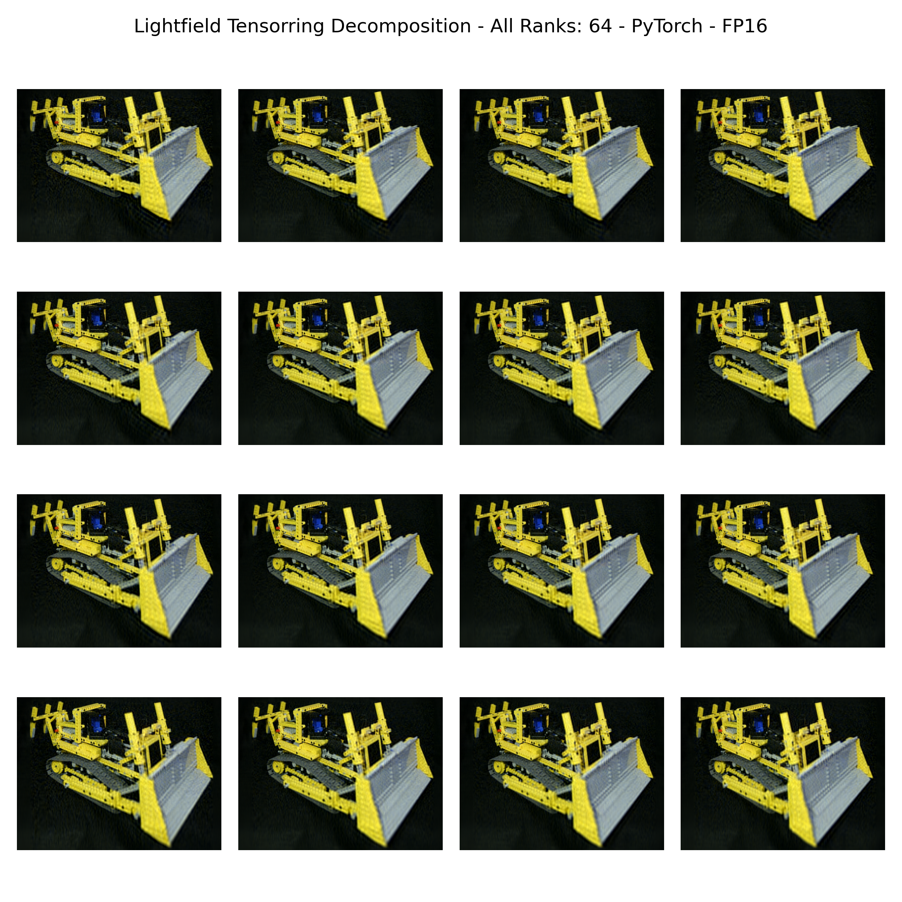

Multi-Input Einsum Contraction
Task 1: PyTorch Reference Contraction
a) Classification
The tensor indices can be classified as:
M:a, c, xN:b, yK:s, p
b) Einsum contraction tensor_abcyx
The einsum expression can be written as: acspx,bspy->abcyx.
tensor_acspx_fp32 = torch.tensor(data['tensor_acspx'], device='cuda:0', dtype=torch.float32)
tensor_bspy_fp32 = torch.tensor(data['tensor_bspy'], device='cuda:0', dtype=torch.float32)
tensor_acspx_fp16 = torch.tensor(data['tensor_acspx'], device='cuda:0', dtype=torch.float16)
tensor_bspy_fp16 = torch.tensor(data['tensor_bspy'], device='cuda:0', dtype=torch.float16)
tensor_abcyx_fp32 = torch.einsum("acspx,bspy->abcyx", tensor_acspx_fp32, tensor_bspy_fp32).to(device='cpu')
tensor_abcyx_fp16 = torch.einsum("acspx,bspy->abcyx", tensor_acspx_fp16, tensor_bspy_fp16).to(device='cpu')
c) Visualize FP16 and FP32 Results
The two calculated results for the einsum expression are simply passed to the plot_tensor() function.
plot_tensor(
tensor_abcyx_fp32,
path=f'{path}/results/torch_32.png',
title='Lightfield Tensorring Decomposition - All Ranks: 64 - PyTorch - FP32'
)
plot_tensor(
tensor_abcyx_fp16,
path=f'{path}/results/torch_16.png',
title='Lightfield Tensorring Decomposition - All Ranks: 64 - PyTorch - FP16'
)
The visualization that is produced is a bulldozer.
FP32 Bulldozer |
FP16 Bulldozer |
|---|---|
 |
{kind=link}
{kind=link}
Both results show the bulldozer clearly.
There are only minimal differences in the sharpness of the pictures.
Therefore, we will use the torch.float16 tensors for the following tasks.
Task 2: Generating a Basic Config
python3 -m src.assignments.assignment_06.main
a) Generate an initial config
To use the generate_config function we first import the respective function from the config file from assignment 5.
We provide the generate_config function the entire einsum string acspx,bspy->abcyx and take the shape of the FP16 input tensors.
cfg = generate_config("acspx,bspy->abcyx", [tensor_acspx_fp16.shape, tensor_bspy_fp16.shape])
b) Resulting config
The resulting config for the einsum string looks as follows:
Config(
data_type = DataType.FLOAT16
prim_main = PrimType.GEMM
prim_last = LastType.NONE
prim_first = FirstType.ZERO
dim_types = ['M', 'M', 'K', 'K', 'M', 'N', 'N']
exec_types = ['SEQ', 'SEQ', 'SEQ', 'SEQ', 'SEQ', 'SEQ', 'SEQ']
dim_sizes = [4, 3, 64, 64, 1536, 4, 1152]
strides[0] = [18874368, 6291456, 98304, 1536, 1, 0, 0]
strides[1] = [0, 0, 73728, 1152, 0, 4718592, 1]
strides[2] = [21233664, 1769472, 0, 0, 1, 5308416, 1536]
)
Task 3: Optimized Config
a) Apply Optimizations
To apply the optimizations to the config object, we pass it to the Optimizer class.
Afterwards we split the M=1536 and the N=1152 dimensions into a PRIM and a PAR dimension.
The last step is to make the configuration executable.
opt = Optimizer(cfg)
n1, n2 = 9, 128
opt.split_dim(6, n1, n2)
m1, m2 = 12, 128
opt.split_dim(4, m1, m2)
opt.make_executable()
b) Resulting optimizer Config
The resulting optimized config for the einsum string looks as follows:
Config(
data_type = DataType.FLOAT16
prim_main = PrimType.GEMM
prim_last = LastType.NONE
prim_first = FirstType.ZERO
dim_types = ['M', 'M', 'M', 'N', 'N', 'K', 'K', 'M', 'N']
exec_types = ['PAR', 'PAR', 'PAR', 'PAR', 'PAR', 'SEQ', 'PRIM', 'PRIM', 'PRIM']
dim_sizes = [4, 3, 12, 4, 9, 64, 64, 128, 128]
strides[0] = [18874368, 6291456, 128, 0, 0, 98304, 1536, 1, 0]
strides[1] = [0, 0, 0, 4718592, 128, 73728, 1152, 0, 1]
strides[2] = [21233664, 1769472, 128, 5308416, 196608, 0, 0, 1, 1536]
)
Task 4: cuTile Kernel
a) Contraction
Before we implement the cuTile kernel itself we first prepare the original tensors.
For that we apply the shape from the config object to the respective tensors.
To achieve a better kernel execution we permute all three tensors, so that the PRIM shapes of them are to the right of the tensors.
This also allows us to use the tensors A and B directly for the computations, without the need for transposing a tile inside the cuTile kernel.
shape_A = get_tensor_shape(cfg, t_idx=0)
shape_B = get_tensor_shape(cfg, t_idx=1)
shape_C = get_tensor_shape(cfg, t_idx=2)
cutile_tensor_abcyx_fp32 = torch.zeros_like(tensor_abcyx_fp32, device='cuda:0')
res_A = tensor_acspx_fp16.reshape(shape_A)
per_res_A = res_A.permute(0, 1, 2, 4, 3, 5).contiguous()
res_B = tensor_bspy_fp16.reshape(shape_B)
per_res_B = res_B.permute(0, 1, 3, 4, 2).contiguous()
res_C = cutile_tensor_abcyx_fp32.reshape(shape_C)
per_res_C = res_C.permute(0, 1, 2, 3, 5, 4, 6).contiguous()
launch_multi_input_kernel(per_res_A, per_res_B, per_res_C)
The kernel itself needs a grid which uses all of the PAR dims from the optimized config object.
Further, we pass the PRIM dimensions as the tile sizes for the kernel.
The last parameter we pass to the kernel is the GROUP_SIZE for swizzeling.
grid = (C.shape[0] * C.shape[1] * C.shape[2] * C.shape[3] * C.shape[4], 1, 1)
ct.launch(torch.cuda.current_stream(),
grid,
multi_input_kernel,
(A, B, C, C.shape[6], C.shape[5], A.shape[4], 8))
Inside the cuTile kernel we first compute the id’s for the respective parallel dimensions.
bid = ct.bid(0)
x_o_par = bid % C.shape[4]
bid = bid // C.shape[4]
y_o_par = bid % C.shape[3]
bid = bid // C.shape[3]
c_par = bid % C.shape[2]
bid = bid // C.shape[2]
# L2 swizzle (n_outer, m_outer)
num_n_o = C.shape[1] # 4
num_m_o = C.shape[0] # 4
plane = num_n_o * num_m_o
mn_bid = bid % plane
bid = bid // plane
num_in_group = GROUP_M * num_m_o
group_id = mn_bid // num_in_group
first_x_o = group_id * GROUP_M
grp = min(num_n_o - first_x_o, GROUP_M)
b_par = first_x_o + (mn_bid % grp)
a_par = (mn_bid % num_in_group) // grp
The contraction itself is similar to the kernels of the preceeding assignments.
for k_seq in range(A.shape[2]):
tile_A = ct.load(A, index=(a_par, c_par, k_seq, x_o_par, 0, 0), shape=(1, 1, 1, 1, tK, tM), padding_mode=ct.PaddingMode.ZERO)
tile_B = ct.load(B, index=(b_par, k_seq, y_o_par, 0, 0), shape=(1, 1, 1, tN, tK), padding_mode=ct.PaddingMode.ZERO)
# Reshape due to rank mismatch
r_tile_A = ct.reshape(tile_A, (tK, tM))
r_tile_B = ct.reshape(tile_B, (tN, tK))
acc = ct.mma(r_tile_B, r_tile_A, acc)
o_acc = ct.reshape(acc.astype(C.dtype), (1, 1, 1, 1, 1, tN, tM))
ct.store(C, index=(a_par, b_par, c_par, y_o_par, x_o_par, 0, 0), tile=o_acc)
b) Verification
To verify the correctness of our kernel we first need to bring the output tensor C back into the original shape.
Afterwards we compare with the refernce torch.einsum computation.
result_C = per_res_C.permute(0, 1, 2, 3, 5, 4, 6).contiguous()
res_result_C = result_C.reshape(cutile_tensor_abcyx_fp32.shape)
assert torch.allclose(ref, res_result_C, atol=1e-2), "Task 4b failed"
print("Kernel 4b passed!")
c) Benchmarking
At last we compare the performance of both our kernel and the reference torch.einsum computation using triton.tesing_do_bench.
# Benchmark - cuTile
cutile_tensor_abcyx_fp32 = torch.zeros_like(tensor_abcyx_fp32, device='cuda:0')
warmup, rep = 200, 2000
cutile_result = triton.testing.do_bench(
lambda: launch_multi_input_kernel(per_res_A, per_res_B, per_res_C),
warmup=warmup, rep=rep)
cutile_tflops = 2 * cutile_tensor_abcyx_fp32.numel() * shape_A[2] * shape_A[3] / (cutile_result / 1000) / 1e12
# Benchmark - PyTorch
torch_result = triton.testing.do_bench(
lambda: torch.einsum("acspx,bspy->abcyx", tensor_acspx_fp16, tensor_bspy_fp16),
warmup=warmup, rep=rep)
torch_tflops = 2 * tensor_abcyx_fp32.numel() * shape_A[2] * shape_A[3] / (torch_result / 1000) / 1e12
When comparing the results, we can see a significant difference to the reference computation.
cuTile Kernel Average Time: 14.32 ms
PyTorch Average Time: 11.37 ms
cuTile Kernel TFLOPS: 48.60 TFLOPS
PyTorch TFLOPS: 61.21 TFLOPS
Optional Task: Further Optimizing the cuTile Kernel
The version we presented in Task 4 already is the highest performance we could achieve.
1) Approach: Sole Splitting
Our first approach was to simply split the large M=1536 and N=1152 dimension.
As we made no further optimizations we transposed the A and C dimension within the kernel.
That resulted in the following performance:
cuTile Kernel Average Time: 18.19 ms
cuTile Kernel TFLOPS: 38.25 TFLOPS
2) Approach: Splitting + Fusing
The second approach enhanced the first approach by additionally fusing the parallel N, M and K dimensions.
That meant our config object would shrink to:
Config(
data_type = DataType.FLOAT16
prim_main = PrimType.GEMM
prim_last = LastType.NONE
prim_first = FirstType.ZERO
dim_types = ['M', 'N', 'M', 'K', 'N']
exec_types = ['PAR', 'PAR', 'PRIM', 'PRIM', 'PRIM']
dim_sizes = [36, 9, 512, 4096, 512]
strides[0] = [2097152, 0, 4096, 1, 0]
strides[1] = [0, 512, 0, 4608, 1]
strides[2] = [2359296, 512, 4608, 0, 1]
)
After adjusting the kernel accordingly, we measured the new performance. However, the performance dropped:
cuTile Kernel Average Time: 18.89 ms
cuTile Kernel TFLOPS: 36.84 TFLOPS
3) Approach: Changed Memory Layout + Splitting
As the second approach showed that fusing was not too beneficial, we moved away from that approach and tried to permute the initial tensors.
spacx = tensor_acspx_fp16.permute(2, 3, 0, 1, 4).contiguous()
bsyp = tensor_bspy_fp16.permute(0, 1, 3, 2).contiguous()
cfg2 = generate_config("spacx,bsyp->abcyx", [spacx.shape, bsyp.shape])
We hoped to get a more beneficial memory layout and the performance proved us right, as we achieved a slight improvement. With this approach we could save some time as we did not have to transpose inside the kernel.
cuTile Kernel Average Time: 17.21 ms
cuTile Kernel TFLOPS: 40.44 TFLOPS
4) Approach: Splitting + Permuting
The third approach showed us that permuting the tensor (and thereby changing the strides and the memory layout) could yield some benefits.
Therefore, we tried to first optimize our original einsum string config and then permute only the B tensor.
res_B = tensor_bspy_fp16.reshape(shape_B)
per_res_B = res_B.permute(0, 1, 3, 4, 2).contiguous()
This approach yielded another small imrpovement.
cuTile Kernel Average Time: 16.66 ms
cuTile Kernel TFLOPS: 41.76 TFLOPS
5) Other Approaches
Beside all of these approaches we also tried to increase the size of the operations inside the kernel by manually setting small M and N dimensions to the execution type SEQ.
Our idea was to get a good L2 cache reuse by increasing the amount of work done by a kernel.
However, this approach significantly drained the performance.
Further, we tried different permutations but couldn’t gain any significant improvements.
6) Approach: Final
Our final approach was to combine the “improvements” that we had made across the different approaches and also come back to the swizzeling logic. That meant:
Splitting (Optimizations)
Permuting
Swizzeling
And indeed we got about 7 TFLOPs more then from our best approach before.
However, as the difference to the torch.einsum implementations we were kind of at a loss.
Therefore, we profiled our final cuTile kernel by running:
ncu --set detailed --kernel-name regex:multi_input_kernel python3 -m src.assignments.assignment_06.main >> ncu_logs_opt.txt
However, when trying to improve our kernel based on the information from the profiler we couldn’t achieve a higher performance.